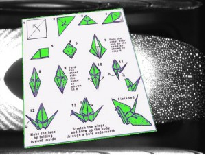

Jazeker, alsof warlocks nog niet genoeg overpowered waren.
Summon/Fold Fel Crane.

by Fruitella @ 14:09 27 June 2008
by Martin @ 12:33 24 June 2008
Ja, we zijn aan het verhuizen (het oude blog staat voorlopig nog hier). En ja, de nieuwe site is lelijk. Maar dat is tijdelijk. Hopelijk. by Martin @ 11:28 11 June 2008
Dat ik haar nooit in levende lijve zal tegenkomen, wil natuurlijk niet zeggen dat ik me geen voorstelling kan maken bij hoe zij eruit ziet...
by Martin @ 15:17 22 February 2008
for making it all possible!
by Martin @ 11:04 11 February 2008
In tegenstelling tot wat velen denken is het schijnbaar monotone en moronische taaltje van de murlocs geavanceerder dan je zou verwachten.
by Martin @ 1:11 7 December 2007
Je moet toch wat als je exalted bent bij de dwergen.
by Martin @ 0:58 7 December 2007
Als je voorspelbaar bezig bent..
by Martin @ 0:43 30 November 2007
Er stond vandaag ruim 500km file in de ochtendspits. Earmen was dan ook erg laat. De oorzaak was iets minder voor de hand liggend dan normaal.
by Martin @ 12:14 20 November 2007
Soms moet je oppassen met wat je zegt in de kroeg..
by Martin @ 1:25 20 November 2007